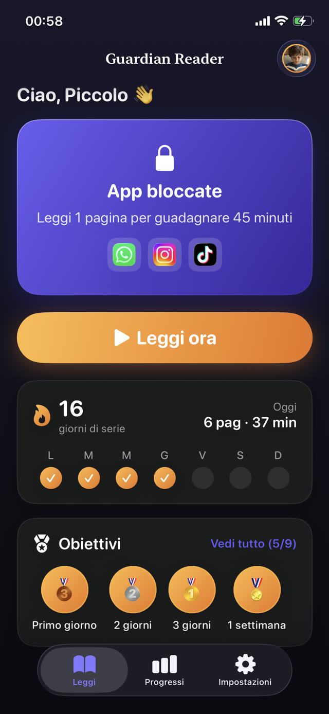

La domanda utile, quindi, non è come convincere tuo figlio che leggere gli fa bene. È come cambiare le condizioni perché la lettura avvenga davvero. Ecco sette cose che funzionano, più o meno in ordine di quanta differenza fanno.


1. Riduci la richiesta finché non è quasi imbarazzante
Dieci minuti. O una pagina. Un obiettivo così piccolo toglie la discussione, perché non c'è modo onesto di sostenere che sia troppo. La costanza è ciò che costruisce un lettore, e la costanza si ottiene molto più facilmente da una richiesta minuscola quotidiana che da una eroica nel fine settimana.
Una volta che l'abitudine è reale, il numero cresce da solo. I bambini che leggono ogni giorno finiscono quasi sempre per leggere oltre il timer, perché fermarsi a metà storia è innaturale. Il timer serve a farli partire, non a limitarli.
2. Lascia scegliere a loro cosa conta come libro
I fumetti contano. I graphic novel contano. Gli almanacchi di calcio, i libri di barzellette, le guide di Minecraft e le riviste contano. Un bambino che legge ciò che ha scelto sta esercitando la stessa decodifica, lo stesso vocabolario e la stessa fluidità di un bambino su un romanzo premiato, e lo fa volentieri.
Il libro che viene letto batte il libro che vorresti leggesse. Il gusto lo indirizzi dopo, quando leggere non è più il campo di battaglia.
3. Metti il libro più vicino del telefono
L'attrito decide quasi tutti i comportamenti. Se il telefono è in mano e il libro è su uno scaffale in un'altra stanza, il telefono ha vinto prima che qualcuno abbia deciso qualcosa. Metti due o tre libri dove la serata succede davvero: il tavolo della cucina, il bracciolo del divano, il letto.
La stessa logica vale al contrario. Tutto ciò che aggiunge dieci secondi di attrito all'apertura di un'app regala al libro una possibilità.
4. Continua a leggere ad alta voce oltre l'età in cui sembra necessario
Leggere a un bambino che sa già leggere non è trattarlo da piccolo. La sua comprensione all'ascolto corre anni avanti rispetto al suo livello di lettura, quindi farsi leggere è dove incontra il vocabolario e le strutture di frase che da solo non riesce ancora a decodificare.
Vale anche il contrario: farsi leggere ad alta voce da tuo figlio è il singolo esercizio di fluidità più efficace che esista, ed è quello che gli insegnanti chiedono a casa. Dieci minuti, ad alta voce, quasi tutti i giorni.
5. Rendi la lettura il prezzo dello schermo, non il suo nemico
Presentare il tempo di schermo come ricompensa della lettura cambia l'intera dinamica. Smetti di essere la persona che toglie qualcosa e diventi quella che tiene aperta la porta. Il bambino non viene punito; sta pagando un biglietto che può permettersi.
Il problema è farla rispettare. Un patto verbale crolla la prima sera in cui sei stanco, e "ho già letto" è impossibile da verificare mentre preparavi la cena. La regola deve reggere senza che tu debba fare l'arbitro ogni sera.
6. Fagli vedere la serie
I bambini rispondono alle catene visibili molto più che alle lodi. Una fila di giorni, una medaglia a sette giorni, un numero che sale: sono cose che portano un'abitudine attraverso le settimane in cui la motivazione non c'è.
Funziona perché sposta la ragione di leggere da te a loro. Nessuno vuole spezzare una serie che ha costruito.
7. Smetti di dare voti alla lettura
Se ogni sessione finisce con domande fatte per coglierli in fallo, leggere diventa un esame, e a un esame nessuno si iscrive volontario. Chiedi cosa è successo nella storia come chiederesti di un film. La curiosità è contagiosa, l'interrogatorio no.
Dove si inserisce Guardian Reader
Guardian Reader trasforma i punti 5 e 6 in qualcosa che va da sé. Scegli quali app restano bloccate e quanta lettura le sblocca. Tuo figlio fotografa le pagine di un qualsiasi libro di carta, le legge tutte di seguito ad alta voce, e l'app verifica la lettura su quelle pagine prima di rilasciare il tempo di schermo.
Tu non sei nel mezzo, ed è tutto il punto. Nessuna trattativa, nessuna fiducia su un'affermazione che non puoi verificare, e una serie che tuo figlio tiene viva da solo.
La lettura sblocca lo schermo.
Gratis · Nessun account, nessun tracciamento
Scarica Guardian Reader per iPhone